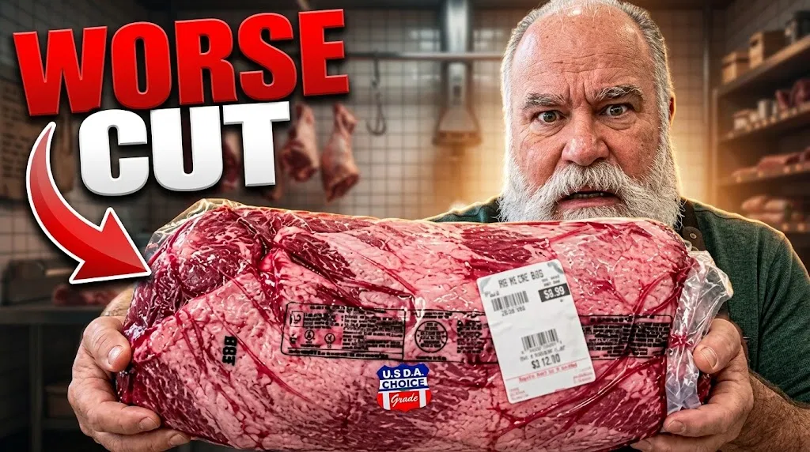

Thumbnail Concepts
Visual ideas built around what a video is about.
YOUTUBE THUMBNAIL DESIGNER
AI-assisted thumbnail concepts built with my ChatG Method — combining ChatGPT for creative direction and Gemini for visual generation.

01 — SELECTED WORK
A selection of improved thumbnail concepts built around different stories, subjects, and viewer hooks.
02 — CHATG METHOD
I use ChatGPT to turn a video title into a strong visual concept and generation prompt, then use Gemini to explore and develop the visual direction.
Identify the subject, story, emotion, conflict, curiosity, and strongest visual opportunity within the title.
Use ChatGPT to analyze the title and develop a strong thumbnail concept, visual hook, composition, and creative direction.
Turn the concept into a detailed visual-generation prompt designed around the intended thumbnail composition.
Use Gemini to generate and explore the visual direction based on the prompt.
Review the generated visual possibilities and identify the direction that best communicates the title.
Develop the selected direction into the final thumbnail concept.
03 — ABOUT
I approach thumbnail design by first understanding the story behind a video, then finding a visual concept that communicates the subject quickly and creates curiosity. My ChatG Method combines ChatGPT for creative direction and prompt development with Gemini for visual generation and exploration.
Visual ideas built around what a video is about.
Communicating a subject and its story in a single frame.
Turning a video title into an image that shows its hook.
ChatGPT for direction, Gemini for generation.
Shaping concepts to fit the look of a channel.
Looking into a topic to find its strongest visual angle.
CREATIVE DIRECTION
Title analysis, creative concepts, visual hooks, thumbnail strategy, and prompt development/refinement.
VISUAL GENERATION
Visual generation, exploration, variations, and development of thumbnail directions.
04 — PROCESS
Break down the title.
Find the strongest visual story.
Develop the generation prompt.
Explore the visual direction using Gemini.
Choose and improve the strongest direction.
Create the final thumbnail concept.
LET'S TURN THE IDEA INTO A VISUAL.